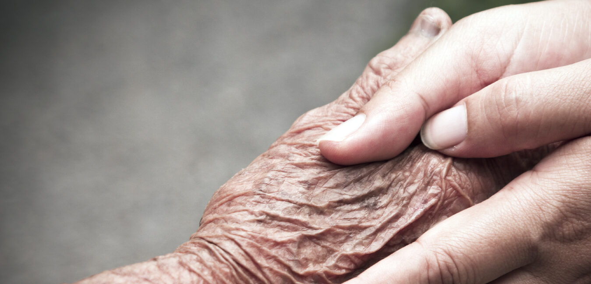

Solidarietà concreta per chi ne ha bisogno.
Azioni semplici, senza scopo di lucro, per chi vive in difficoltà. Dal 2020, aiutiamo persone senza fissa dimora, detenute e famiglie in crisi.
Il Nostro Cuore
Volontari motivati, progetti concreti, trasparenza totale.
Servizio
Il cuore pronto all'aiuto del prossimo nasce dalla semplice voglia di fare il bene.
Volontari al centro
Persone che si organizzano con passione per azioni concrete sul territorio.
Progetti d'aiuto
I destinatari dei progetti sono al centro delle nostre riflessioni e attività.
Un'organizzazione nata per agire
Una ODV che si dedica a progetti di solidarietà sociale. Supporto e assistenza a chi vive in estrema povertà e disagio a Catania.
Ci avvaliamo di volontari motivati, dedicando tempo e risorse per alloggio, cibo, abbigliamento e assistenza sanitaria. Operiamo sul territorio come Unità di strada, in rete con altre associazioni.
Lidia Civiletto
"Il bisogno e l'aiuto concreto mi hanno sempre stimolato nel progettare attività ed eventi con semplicità e determinazione."
Creare una volontà di aiuto di gruppo è una delle imprese più difficili e stimolanti dei nostri giorni. L'associazionismo è la soluzione per azioni concrete e veramente efficaci.
Collabora con noi